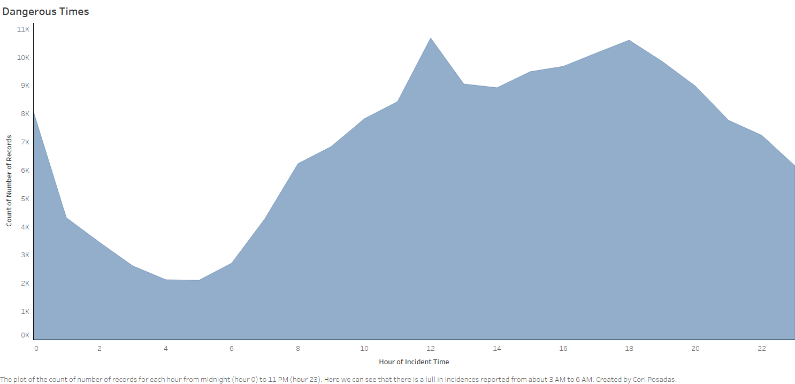

Prototypes


Credit
The "Top 10 Incidences" bar chart is inspired by d3noob's Simple bar graph in v4
The "Most Dangerous Neighborhoods" bar chart is inspired by Aravind Cheekkallur's Horizontal Bar chart d3.v4
The "Dangerous Times" area chart is inspired by d3noob's Simple graph with filled area in v4